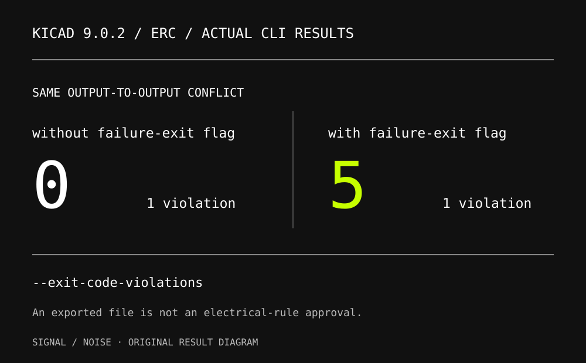
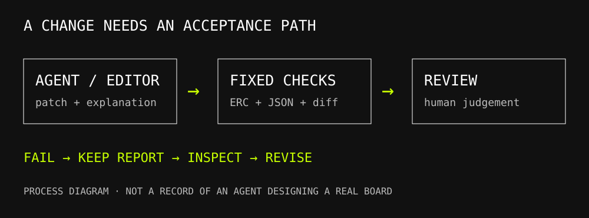

Output → Input

U1 的引脚类型是 Output，U2 是 Input，两者接到同一条 TEST 网络。两个符号及符号库均为本期原创教学材料。

原创结果图，数据来自本期 KiCad 9.0.2 命令行实验。
2026.11.17 / TUE
TOOL LAB · 工具实验室 001
KiCad CLI 的失败退出码
一对正常与故障原理图
给 Agent 改动一个可检查的交付约定
午刊看了接口与数据的解释，这一刊换一个独立的小问题：把原理图交给命令行之后，流水线究竟凭什么继续？我们用两份原创教学原理图做了实际的软件实验，保留输入、报告、日志和脚本。重点是怎样让检查结果可追溯，不是把两块方框当成一块已经设计完成的电路板。
KiCad CLI 能运行电气规则检查（ERC），但“发现违规时用非零退出码失败”需要明确指定。JSON 报告里有错误，并不保证调用者只看退出码时会停下来。
本次环境的 kicad-cli version 返回 9.0.2。参考的是官方 9.0 系列文档；命令参数也在本机帮助中核对，不把这个版本称为当前最新版。
KiCad 官方 CLI：Schematic ERC ↗文档说明 --exit-code-violations 将违规反映为非零退出码；本期具体数值以实际报告为准。
U1 的引脚类型是 Output，U2 是 Input，两者接到同一条 TEST 网络。两个符号及符号库均为本期原创教学材料。
把 U2 改成第二个 Driver，并旋转以保持端点连接，得到 Output 与 Output 相连的故障。ERC 能看到的是符号引脚的电气类型，并没有在这里模拟真实芯片的电压或电流。
| 输入 | 失败退出开关 | 违规数 | 退出码 |
|---|---|---|---|
| good | 开启 | 0 | 0 |
| bad | 开启 | 1 | 5 |
| bad | 未开启 | 1 | 0 |
三次检查都使用 --format json --severity-all。故障图的两份报告都记录了 pin_to_pin 错误，描述为两个 Output 类型引脚相连；改变的是调用程序能否仅用退出码把它识别成失败。
# bad-strict：一项违规，进程退出码 5
kicad-cli sch erc --format json --severity-all \
--exit-code-violations -o bad-strict.json bad.kicad_sch
# bad-default：仍是一项违规，进程退出码 0
kicad-cli sch erc --format json --severity-all \
-o bad-default.json bad.kicad_sch我们还对故障图导出 XML 网表与 SVG：两种导出都返回 0。图像能生成、网络能列出，只能说明这些导出步骤完成；它们不会替你证明 ERC 已通过。把“有输出文件”当成验收条件，就会漏掉本次人为放进去的错误。
完整下载包包含正常、故障两份 .kicad_sch、各自的最小项目文件、原创符号库、sym-lib-table、复现脚本与这次生成的结果。最小项目文件也保留：实验初次只放原理图时，本机没有按预期读取项目符号库，曾报库配置警告；补齐同名项目文件后，正常对照才达到零违规。
unzip experiment.zip
cd signal-noise-erc-lab
kicad-cli version
python3 run.py脚本在本次 Linux 环境使用独立的 XDG 配置、缓存和数据目录，不修改日常 KiCad 配置；其他系统需先核对应用实际采用的配置路径。完成后清理临时目录，报告留在 results/。它保存每条命令的实际退出码和标准输出，也记录输入文件的 SHA-256，便于检查后续结果是否来自同一份输入。
脚本在执行完故障命令后仍继续收集报告，并最终断言上述三组结果。这是实验驱动器的行为：它预期坏样例失败。实际项目流水线则应把非预期违规设为失败，不能照搬“无论什么退出码都继续”的收集逻辑。
Agent 可以解释原理图、写脚本或提出改动。若交付只有“我已经修好”和一张导出图，就又回到了这次实验揭示的问题：输出存在，验收却没有落到可检查的条件上。

只修改指定的原理图与说明，不改验收规则。
交付：修改差异、涉及的符号/引脚、修改理由。
检查：保存 KiCad 版本、完整命令、退出码与 JSON。
ERC 有新增违规时停止交付，保留故障报告。
不通过新增排除项或降低严重级别来隐藏错误。
未执行的仿真、DRC、制造检查分别写明。这不是要求把所有警告一律当成灾难。工程可能有合理的排除项，但它们应当属于事先约定并可审阅的规则；修设计与改规则要分开呈现。把检查命令、项目设置和排除清单一起纳入版本控制，才能看清“错误减少”究竟来自连线修正，还是来自把规则关掉。
本期没有用 Agent 修改真实工程来证明某个模型的设计能力；这里给的是可执行检查与人工复核之间的接口。读者可以先在自己的副本上故意引入一个已知错误，确认流水线确实会拦下它，再考虑加入更多自动化步骤。
CLI 把 ERC、网表、BOM、图纸等动作拆开。对一个小项目，可以先维护明确的命令和输出目录；不要因为导出文件很多，就省略了应该决定成败的检查步骤。
KiBot 将 KiCad 的输出和预检集中到配置工作流。官方用法也提供跳过预检的选项：这很方便，却说明“工具跑完”仍需结合实际启用的检查来解释。本期只阅读其文档，未安装或实跑 KiBot，不把它算作实验结果。
这次值得带走的不是一套更长的命令，而是一项可复核的习惯：保留输入，明确条件，故意让它失败一次，然后检查失败有没有真正传到下一步。
本期软件实验与资料核查：2026-11-17。无唱片栏目，音乐配额 0。